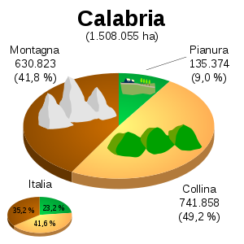

|
La
Calabria si trova nella parte meridionale dell'Italia.
A
est e a sud è bagnata dal Mar Ionio. A ovest è bagnata dal Mar
Tirreno. A nord confina con la Basilicata.
La
maggior parte del territorio è collinare e montuoso. La regione è
attraversata dall'Appennino Calabro, nel quale si trovano il
Massiccio del Pollino, che è un Parco Nazionale (al confine con la
Basilicata) e l'altopiano della Sila (al centro della regione).
I
fiumi della regione hanno un percorso molto breve per la vicinanza
delle catene montuose al mare. Hanno un regime torrentizio, con
secche estive e piene autunnali e invernali. Il più lungo è il
Crati.
Vi
sono anche laghi artificiali utilizzati per la produzione di energia
elettrica e per l'irrigazione.
La
costa tirrenica è alta e rocciosa, quella ionica invece è bassa e
sabbiosa.
Il
clima è mediterraneo sulle coste con estati calde e secche. Sui
rilievi interni gli inverni sono rigidi e nevosi.
|

|